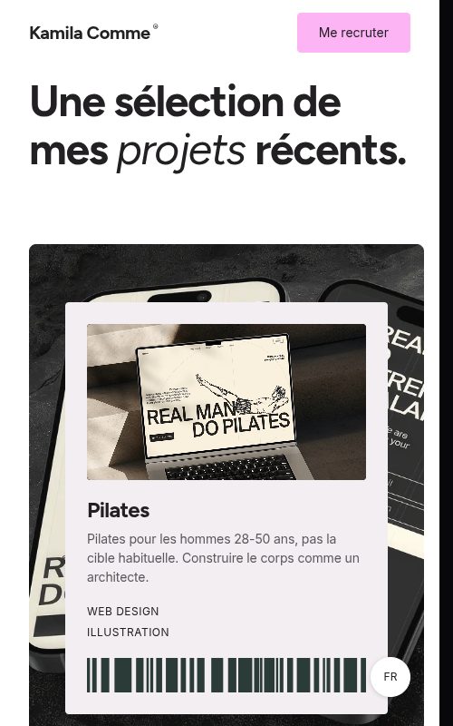
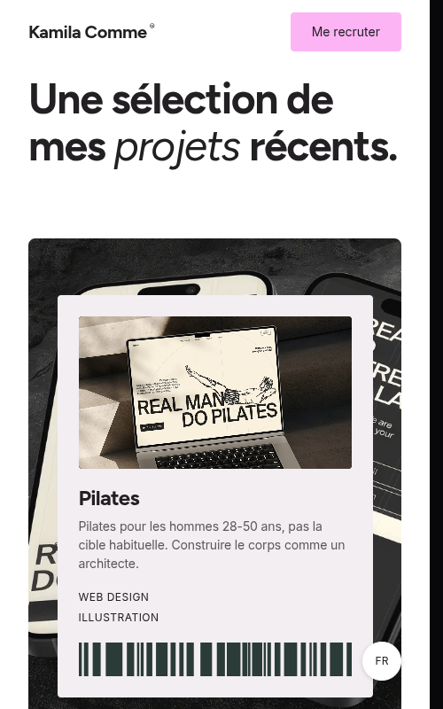
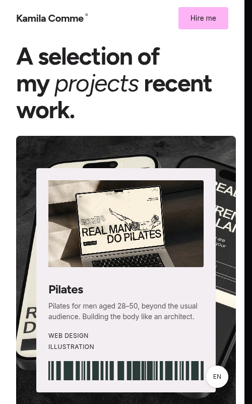
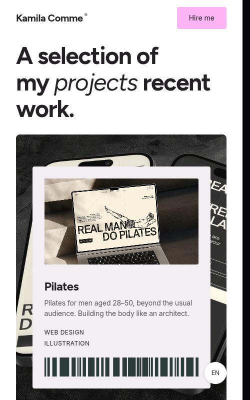
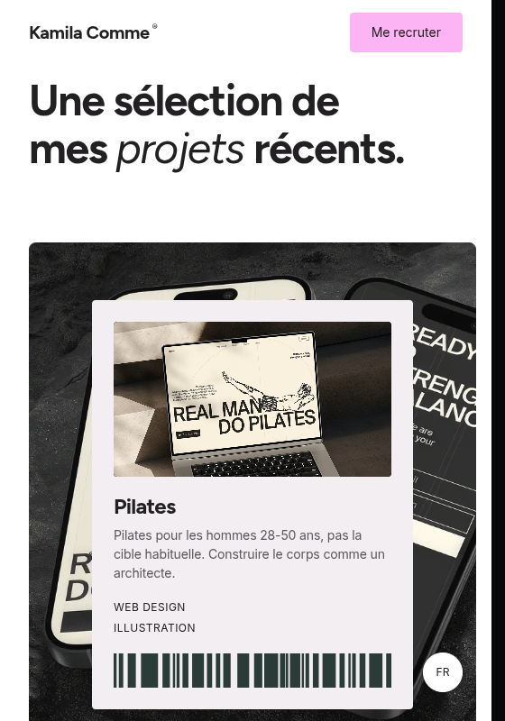
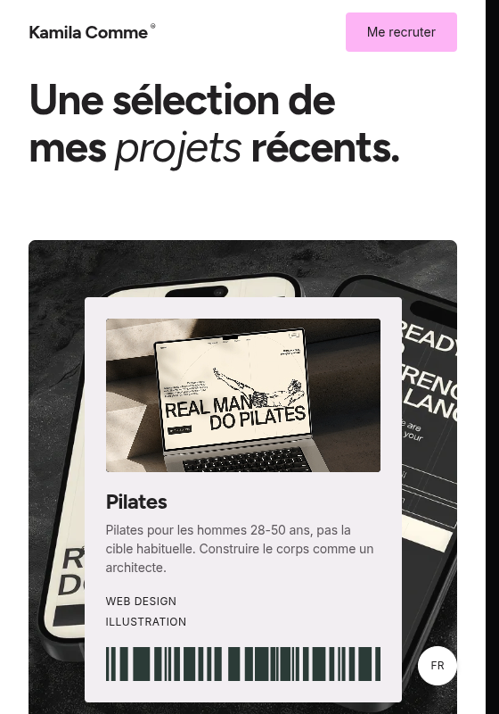
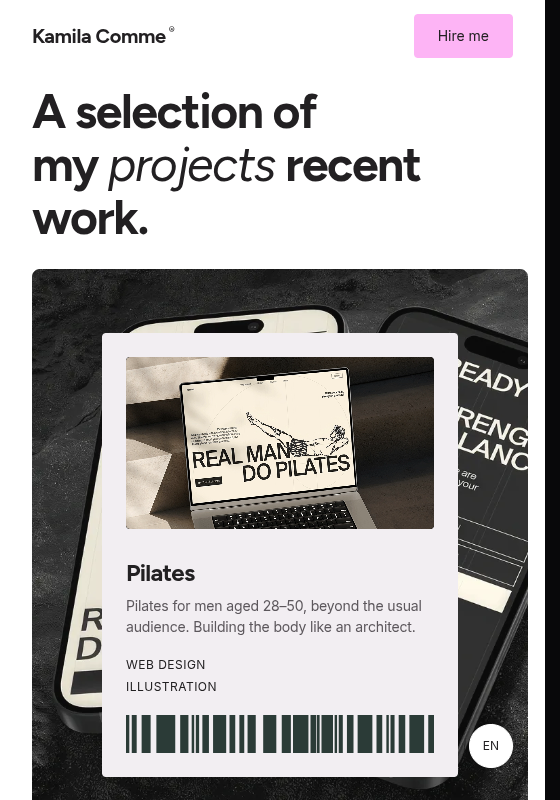
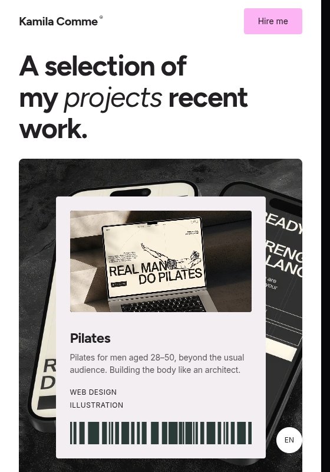

Narrow tablet Projects: right-gutter alignment
Actual Chromium before/after captures from the French and English routes. A 15px stable scrollbar gutter reproduces the available-width difference present in desktop Chrome when a vertical scrollbar is reserved.
Result: the tablet profile is active at both tested widths. Before, the first ticket extends 15px farther right than the Navbar’s “Me recruter” / “Hire me” button. After, their right edges align. The ticket markup, 32px shared tablet gutter, typography, project order and responsive profile remain unchanged.
French · 500×800
Available section width: 485px. CTA right: 453px. Ticket right: 468px before (15px mismatch), 453px after (aligned).


English · 500×800
Available section width: 485px. CTA right: 453px. Ticket right: 468px before (15px mismatch), 453px after (aligned).


French · 560×800
Available section width: 545px. CTA right: 513px. Ticket right: 528px before, 513px after.


English · 560×800
Available section width: 545px. CTA right: 513px. Ticket right: 528px before, 513px after.


Complete Chromium bounds and profile measurements are in measurements.json. No historical screenshot references were changed.